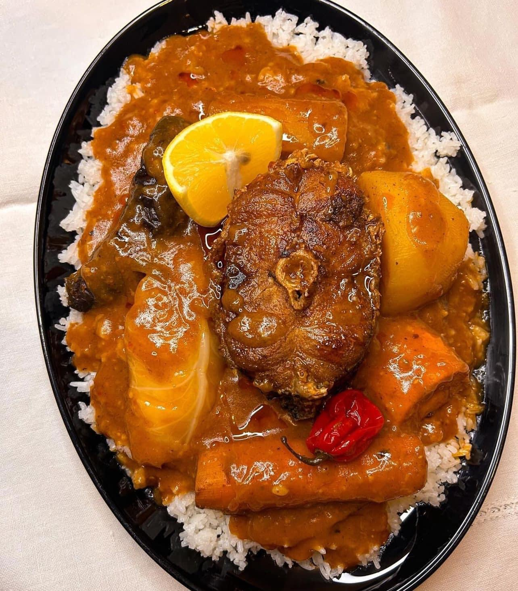
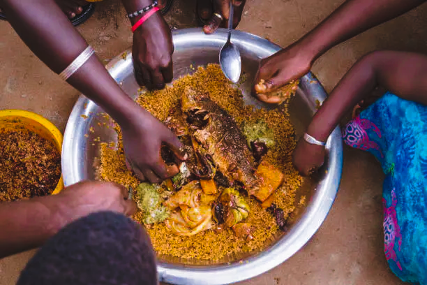
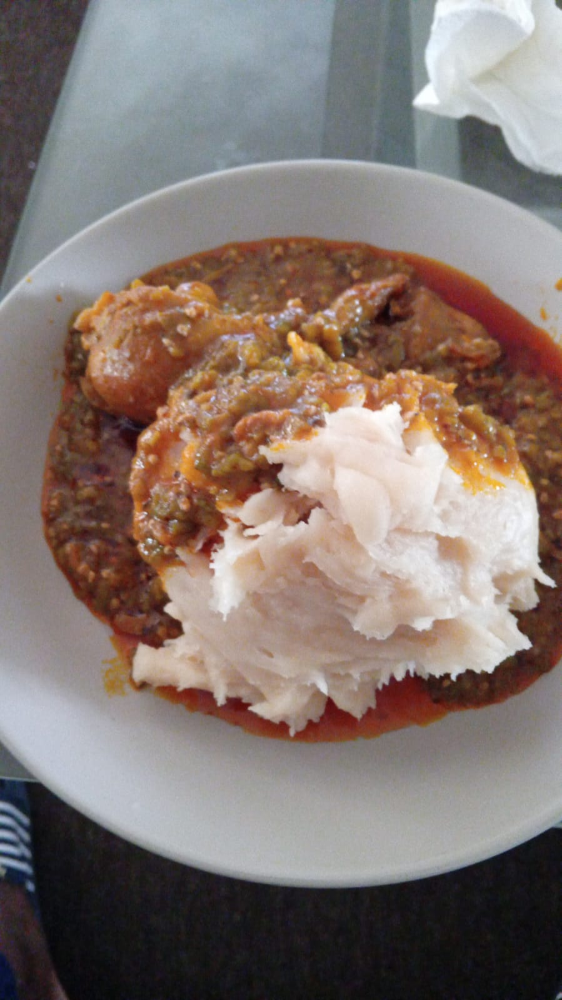

Domoda
Gambian national dish, a rich peanut stew cooked with meat and vegetables and served over rice. Squeeze the lemon over it, and go carefully with the hot pepper.
Food in The Gambia is made to be shared. Here are three dishes you will find at family tables and local restaurants, and what to expect when you try them

Gambian national dish, a rich peanut stew cooked with meat and vegetables and served over rice. Squeeze the lemon over it, and go carefully with the hot pepper.

Benachin rice cooked in a tomato sauce with fish or meat and vegetables, so every grain soaks up the flavour. Often cooked for family meals and celebrations.

A soft, stretchy dough made from cassava, served with a rich soup or sauce. Pinch off a small piece and use it to scoop up the sauce.